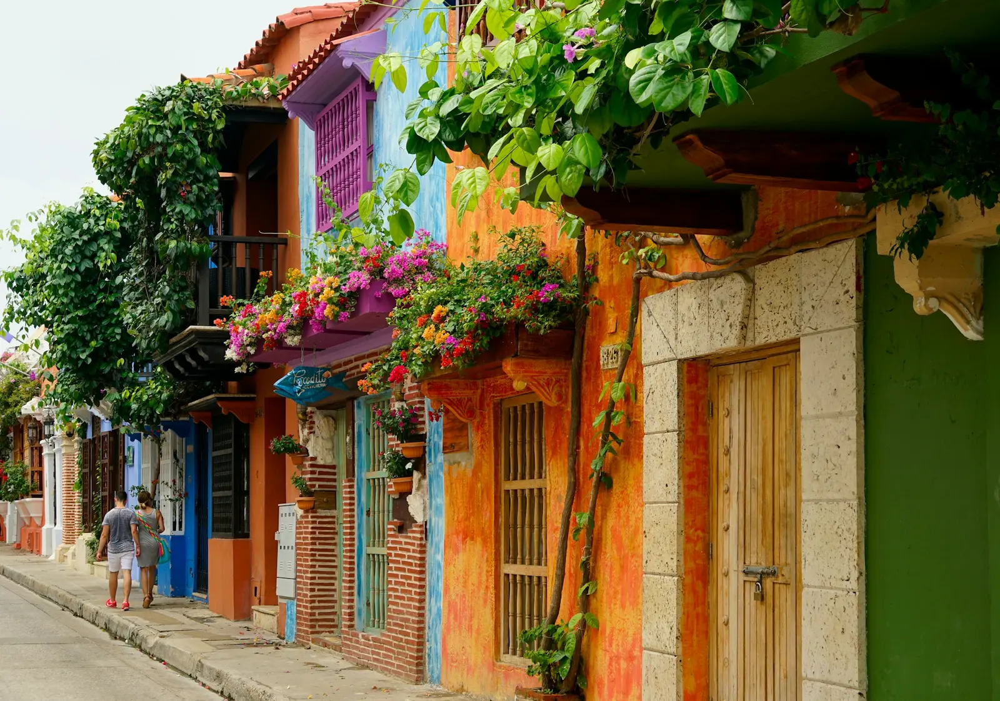
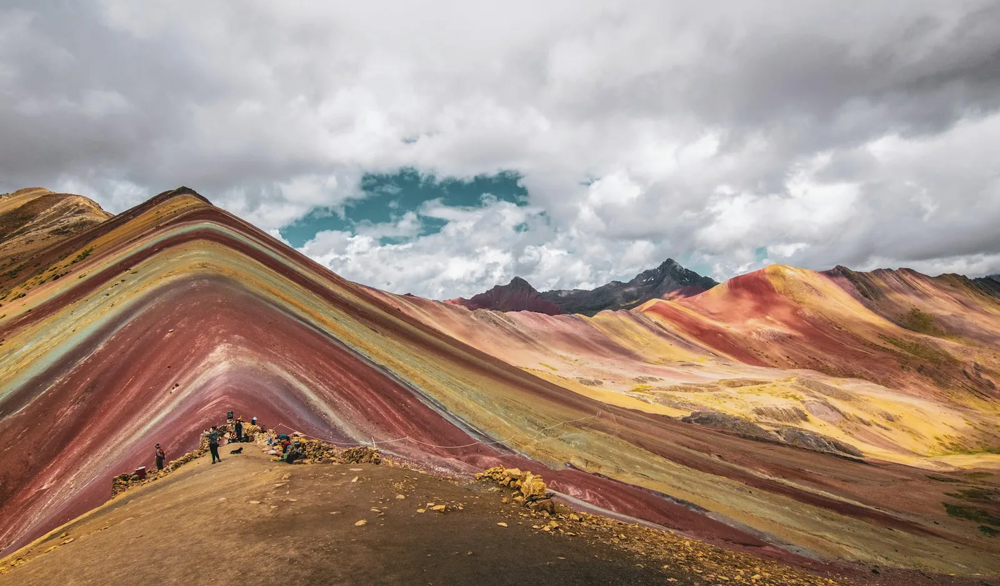
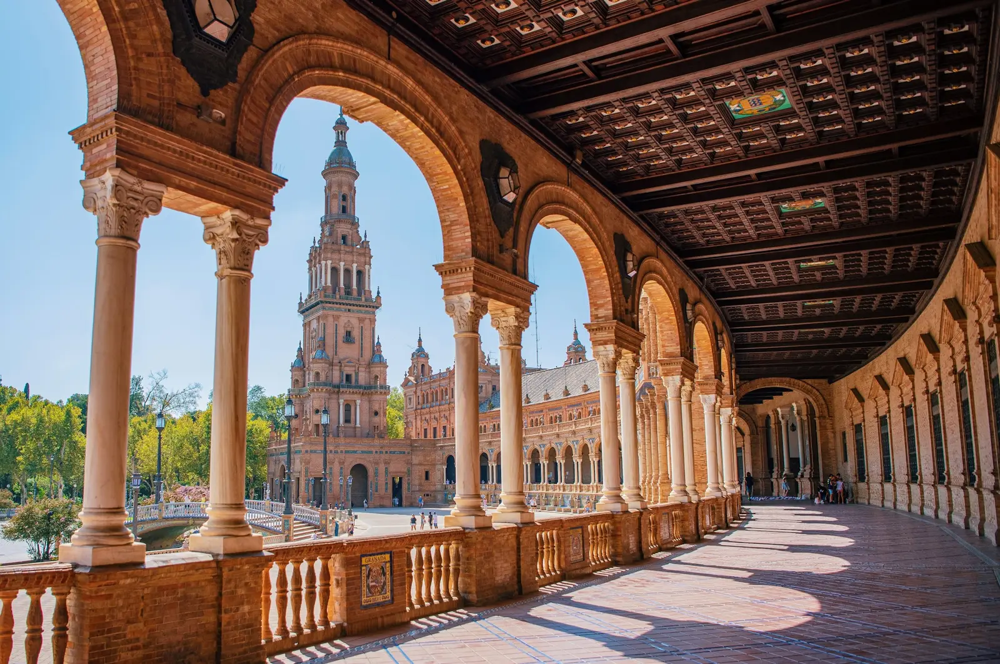

Japón, Kanazawa

Descubre la belleza de los paisajes japoneses y sus colores.
Destinos
Explora nuestra colección de alta resolución, con fotos de nuestros viajes por Asia, Sudamérica y Europa.
Descubre la belleza de los paisajes japoneses y sus colores.

Shanghai combina la arquitectura moderna con la cultura tradicional china.

Cartagena llena sus calles de balcones, flores y colores cálidos.

Descubre las montañas de colores y la piedra inca de los Andes peruanos.

Sevilla mezcla palacios mudéjares, arcos de ladrillo y atardeceres dorados.
Sube tus mejores instantáneas para que podamos disfrutarlas.
| Destino | Tipo de paisaje | Colección |
|---|---|---|
| Japón | Naturaleza y ciudades | Asia |
| China | Tradición y modernidad | Asia |
| Colombia | Selvas y playas | Sudamérica |
| Perú | Montañas y ciudades coloniales | Sudamérica |
| España | Palacios y atardeceres | Europa |
| Colección de fotografías de viajes por cinco países. | ||
Puedes conocer más sobre Japón en este enlace externo (se abre en una pestaña nueva).
Volver arriba